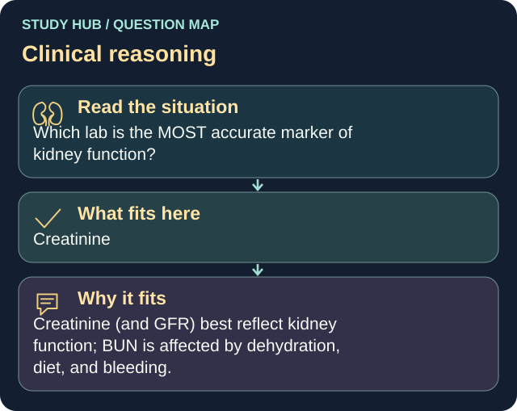

Which lab is the MOST accurate marker of kidney function?
Answer
Creatinine
Reasoning
Creatinine (and GFR) best reflect kidney function; BUN is affected by dehydration, diet, and bleeding.
Why the other answers do not fit
- BUN
BUN is affected by dehydration, diet, and bleeding.
- Sodium
- Specific gravity
Shared reasoning for choices without a separate note: Creatinine (and GFR) best reflect kidney function; BUN is affected by dehydration, diet, and bleeding.
